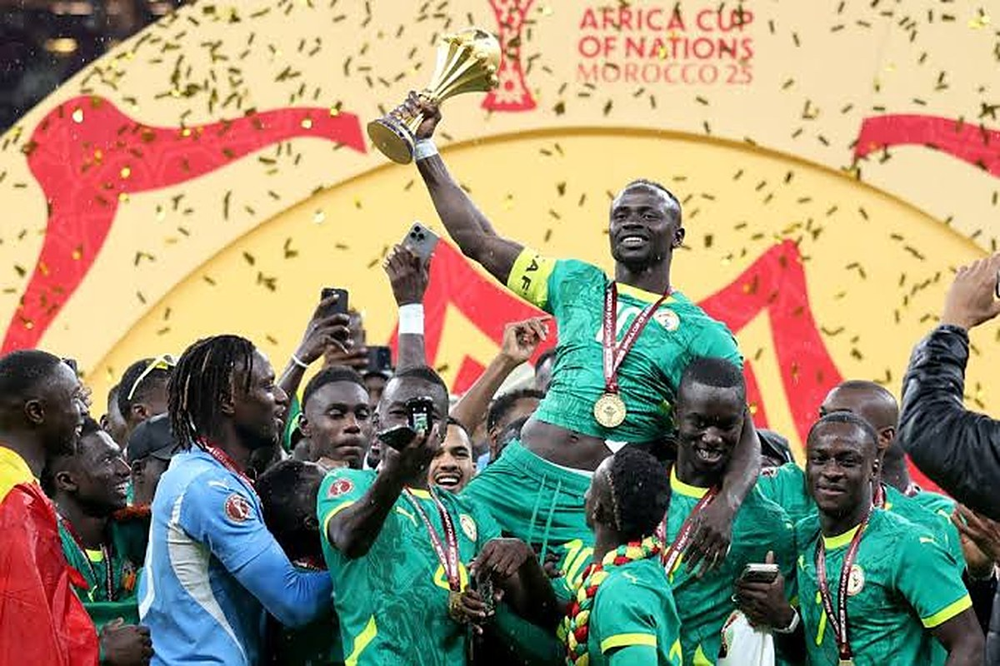

Handout: Confederation of African Football - editorial use
East Africa is building hotel rooms for 29 days of football
AFCON 2027 is being sold to East African hoteliers as a demand event. The document that will decide who earns from it is a procurement specification, and it lands on the opening weeks of the region's most expensive season.
At the Edmara Hotel site in Hoima, the Africa Cup of Nations is being measured in bodies. "Currently, we have 100 workers at the construction site," Edgar Isingoma, the hotel's proprietor, told Uganda's Daily Monitor in August, putting the build at roughly 80 per cent complete and due to finish by December. Edmara is going to about 95 rooms. A short drive away, the Albertine Palace is taking its international-standard stock from 78 to 100. Kabalega Resort is going from 102 to 259 across its Hoima and Masindi properties. Hoima Resort Hotel has added an accommodation wing. Almost none of this was in anyone's business plan three years ago, and all of it is being built against a tournament that will last twenty-nine days.
That is the sentence East African operators should sit with before deciding what AFCON PAMOJA 2027 actually is. FIFA confirmed the dates ahead of its congress in Vancouver: 19 June to 17 July 2027, twenty-four teams, ten candidate stadiums across seven host cities in Kenya, Uganda and Tanzania. The official framing in all three capitals is of a demand event. Kenya's sports cabinet secretary, Salim Mvurya, unveiling the local organising committee's standing committee on 29 October, said its members "carry the hopes and aspirations of over 55 million Kenyans", and the government's account of the benefits runs predictably through hotels, airlines, transport operators and tour companies. The physical evidence is real enough: Uganda's new 20,000 seat Hoima City Stadium is a $130m build, part of a Shs545bn public package reshaping the Bunyoro sub-region.
This publication argued in September that the tournament would be priced rather than filled, and that counting rooms was the wrong exercise for most East African hotels. Six weeks on, the rooms are being built anyway, with public credit, and the question has moved. It is no longer whether to add supply. It is who repays it, and on what terms the inventory gets committed.
Because the document which will determine who earns from AFCON is not a demand forecast. It is a procurement specification, and it is already written.
CAF's inspection report, reported in March, required Uganda to demonstrate validated hotel capacity for teams and officials by August, and it attached a number: at least five five-star hotels, each with at least fifty rooms. That is not a marketing brief. It is a threshold, assessed by a visiting delegation, and it is why Uganda's local organising committee started inspecting hotels across the Bunyoro sub-region in the first place, on the stated doubt that enough five-star stock existed to validate. By September, when a CAF delegation moved through all three host countries, the inspection list in Kenya explicitly included team and match officials' hotels. Nobody is being asked to forecast arrivals. They are being asked to pass an audit.
This distinction matters more in East Africa than it would in a market with a functioning grading regime, because the specification is denominated in stars and the stars are not reliable. A five-star classification in the region is an administrative artefact of varying vintage, frequently self-asserted and rarely re-inspected, which means a CAF requirement for five five-star hotels of fifty rooms each is in practice a requirement for whatever the delegation accepts on the day. Martin Owori, director of Hoima Resort Hotel and secretary of the Bunyoro Hotel Owners Association, told the Monitor his property meets CAF requirements, citing three presidential suites, two restaurants, 26 twin rooms and 28 double rooms. That may well be right. It is also an operator's assessment of his own asset against a standard that has not been published in detail, which is a thin foundation for a financing decision.
The financing decision has nonetheless been made. Peter Ogwang, Uganda's state minister for sports, told Parliament in July that the government would "provide interest rate support through the Uganda Development Bank (UDB) for approved service providers", under a facility of Shs101.1bn, roughly $27m, for selected hotels in Hoima City and Masindi District. Eligibility runs through a government shortlist prepared with CAF. The association had asked for more: in October 2025 its chairman, Dr Fred Kabagambe Kaliisa, who is also senior presidential adviser on oil and gas, put a proposal to the Prime Minister seeking Shs130bn, on the assessment that regional capacity needed to reach at least 900 rooms. Kaliisa also told members not to rely on government support alone. The gap between the ask and the allocation is about a quarter of the requirement, and it will be closed, if it is closed, by commercial borrowing.
It is subsidised credit, not grant money, and that is the whole point. These are balance sheet commitments with ten and fifteen year tails, taken against a single month of guaranteed demand. Owori was candid about the mechanism: "We have negotiated with Uganda Development Bank for financing to complete the remaining works." Not everyone is inside the facility. Gilbert Musana, standards and quality officer at Kabalega Resort, whose expansion is the largest in the reported set, said flatly: "We have not received government funding for this investment." Opposition leader Joel Ssenyonyi has asked in Parliament how beneficiary hotels were chosen, and the Hoima West MP, Ismail Kasule, has said local leaders lack information about planned works in the city. A shortlist drawn with a football federation, funding a private hotel sector with public credit, is going to attract that question for the next eighteen months.
Set against the loan tenor, twenty-nine days is not a business case. It is a trigger. Which raises the only question that matters for anyone weighing an AFCON-driven expansion anywhere in the region: who is the second payer?
In Bunyoro the honest answer is not football and it is not safari. It is oil. Ogwang, inspecting the Hoima stadium, urged hotel owners to upgrade so they could host local and international visitors "including oil and gas guests", and the Albertine's extraction economy is the only source of structural, year-round, rate-insensitive room nights in that geography. The operators who have said this out loud are the ones underwriting correctly. Smith Elgon, customer relations manager at the Ladu Hotel in Masindi, framed the tournament as a shop window rather than a revenue line: "AFCON presents an opportunity to market Bunyoro as a tourism destination beyond the football tournament." Musa Max Muyambi at the Albertine Palace called it "a once-in-a-generation opportunity for Uganda and for Bunyoro", which is true and also an argument for treating it as marketing spend rather than as a demand curve. The properties at risk are the ones whose models carry a single large month and then quietly assume Murchison Falls traffic fills the rest.
For the urban hotels in Nairobi, Dar es Salaam and Arusha, the exposure runs the other way, and it is a calendar problem rather than a construction one. The tournament window opens on 19 June and closes on 17 July. The region's highest-rate season opens on 1 July. Angama's published rate card puts its peak band at 1 July to 30 September, at $2,650 per person per night at Angama Mara against a standard-season $1,775 in its most recently published schedule, a premium of roughly 49 per cent. Those are safari camp economics, not city hotel economics, but the city hotels earn from the same calendar: the Nairobi and Arusha transit night is priced off the lodge booking it brackets. A month-long CAF block for teams, officials, media and partners, negotiated at tournament rates, running from the third week of June to the middle of July, does not sit in a trough. It sits across the hinge of the year.
That makes it a displacement question, not an upside question, and it should be tested as one. The relevant arithmetic is not the block's room rate against the June average. It is the block's room rate, net of commission and of the servicing load that accredited guests bring, against what those same room nights would have earned from a July safari arrival booked twelve months out. If the answer is negative, the correct commercial response is a smaller allocation, not a bigger one, and the reputational gain of having hosted a delegation is the thing being bought.
There is a further exposure that almost nobody is pricing, which is that venue risk is room block risk, and the venues are not settled. Eldoret and Kakamega have already fallen out of Kenya's proposed host cities, leaving Nairobi as the only one. CAF found that as of February none of Kenya's proposed competition stadiums fully met its Category Four requirements, and judged that Nyayo National Stadium "may more realistically be considered as a training facility". In Uganda the picture was similar: media facilities at Hoima were assessed as "below Afcon standards", with a media tribune CAF put at no more than twenty journalists, a finding Ogwang disputed on the grounds that "That stadium met European standards." Kenya's sports principal secretary, Elijah Mwangi, has told Parliament that the Kasarani contractor cut its workforce over unpaid debts of more than Sh3.7bn and the Nyayo contractor left site over more than Sh2.6bn, with AFCON projects accounting for Sh11.7bn of a Sh14.47bn departmental shortfall. A hotel that has borrowed against proximity to a venue is carrying a decision it does not control.
None of which argues for sitting it out. It argues for reading the contract rather than the press release. The terms that will decide whether AFCON is profitable for an individual property are the ones nobody is discussing publicly: the attrition clause, the cut-off date at which unsold block rooms return to inventory, whether the rate is net or commissionable, who carries the cost of accredited-guest servicing, and whether the allocation is tied to a named venue or to a host city. Those are negotiable now, eighteen months out, and they will not be negotiable in May 2027.
The politicians have, to their credit, mostly stopped pretending the tournament is the point. "This is not only about Afcon," Rogers Byamukama, the Masindi Municipality MP and a local organising committee member, said of the Shs545bn infrastructure package reshaping Bunyoro. Masindi's mayor, Rogers Amanyire, has asked that the facilities stay accessible, affordable and well maintained afterwards. Bosco Muhanuzi, the Hoima East City Division mayor, went furthest: "After Afcon 2027, it is Hoima City that will benefit most." He may be right about the roads, the airport terminal and the referral hospital, which are genuine public assets with thirty-year lives. The hotel rooms are a different asset class, privately owned, publicly subsidised and sized to a month. Twenty-nine days from now the tournament will still be more than six months away. The debt will already be drawn.
📣 Telegram 💬 WhatsApp 💼 LinkedIn 📚 All guides